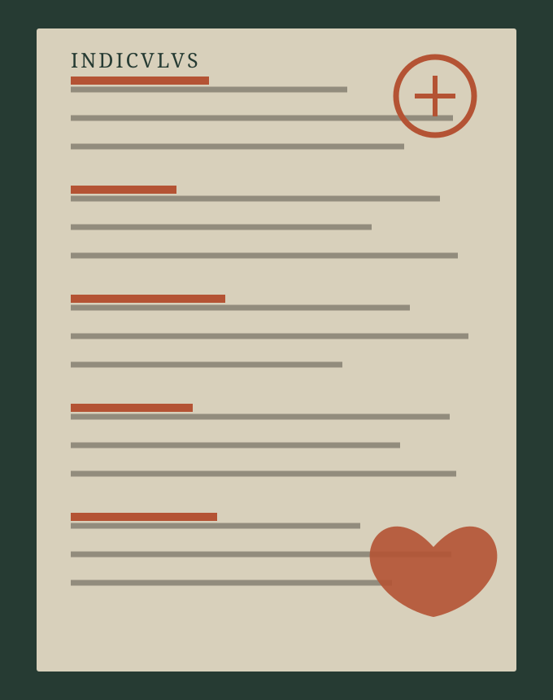

Boarnekaart · 8e ieu
Tradysjes, lêzen út in ferbodslist.
De Indiculus superstitionum et paganiarum jout tritich koarte koppen fan praktiken dy’t in tsjerklike skriuwer ôfkarde. Hjir binne se ien foar ien lêzen: mei de Latynske formule, in foarsichtige ferklearring en in dúdlike grins fan wat de boarne net seit.
Metoadyske grins. De Indiculus is gjin Fryske list en gjin hânboek foar in weropboude rite. Hy is in Karolingyske, kontinintaal-oerlevere tsjerklike tekst. In ferbod bewijst inkeld dat in skriuwer in praktyk as probleem beneamde.

Hoe dizze katalogus te brûken
Begjin by wurden, net by winsk.
Alle tritich koppen binne bewarre yn it Latyn. De koarte tekst dêrnei is in lêshelp, gjin oersetting fan in ûntbrekkend ritueel.
As in term ûndúdlik is—sa as dadsisas, nimidas, Yrias of de ferwizing nei hoarnen en slakken—bliuwt dy ûnwissichheid sichtber. Gjin moderne praktyk op dizze side wurdt as iermidsiuwsk presintearre.
De tritich koppen
In ûndersykskaart, gjin liturgy.
Fan ferbod nei ûndersyk
In kop is in fraach, gjin antwurd.
De Indiculus fertelt ús wêr’t in tsjerklike skriuwer in probleem seach. Dêrnei moat elke fraach njonken ûnôfhinklike boarnen lein wurde: opgraving, lânskip, objekten, grêven, delsettingsskiednis en skriftlike kontekst. Pas wêr’t sok bewiis gearkomt, kin in foarsichtige Fryske ferliking begjinne.
Undersyksrûtes
Fyn de boarne, net allinne it ferhaal.
Dit binne ynstitúsjonele yngongen nei ûndersyk, kaarten, hânskriften en kolleksjes. Sy binne gjin selsstannich bewiis foar in rite; se meitsje wol de boarneketen sichtber en kontrolearber.
RUG-ûndersyk · lân, terp en materiële wrâld
In lêskast foar Fryske kontekst.
Dizze seleksje út it University of Groningen research portal jout argeologyske en lânskiplike kontekst foar Fryslân en it brede Fryske kustgebiet. It is gjin bewiis foar in spesifike Indiculus-kop; it helpt om grûn, bewenningsskiednis, materiaal en feroaring apart te ûndersykjen.
Tekst en ferliking
Boarnen om fierder te kontrolearjen.
De earste link jout de Latynske koppen yn de oerlevering. De oare boarnen jouwe kontekst foar iermidsiuwske tsjerklike korreksjeteksten; se binne gjin bewiis dat elke neamde praktyk yn Fryslân bestie.
- Capitularia BK 108: redaksje, datearring en oerlevering ↗
- Universiteit Heidelberg: digitaal hânskrift Vat. Pal. lat. 577 ↗
- Yitzhak Hen (2015): de Indiculus as metodysk drege boarne ↗
De Latynske formule folget de online tekstfoarm fan BK 108; farianten en ûndúdlike wurden bliuwe by de hânskrift- en edysjeûndersyk. De lêshelpen binne redaksjonele parafrases en moatte neist de Latynske kop lêzen wurde.